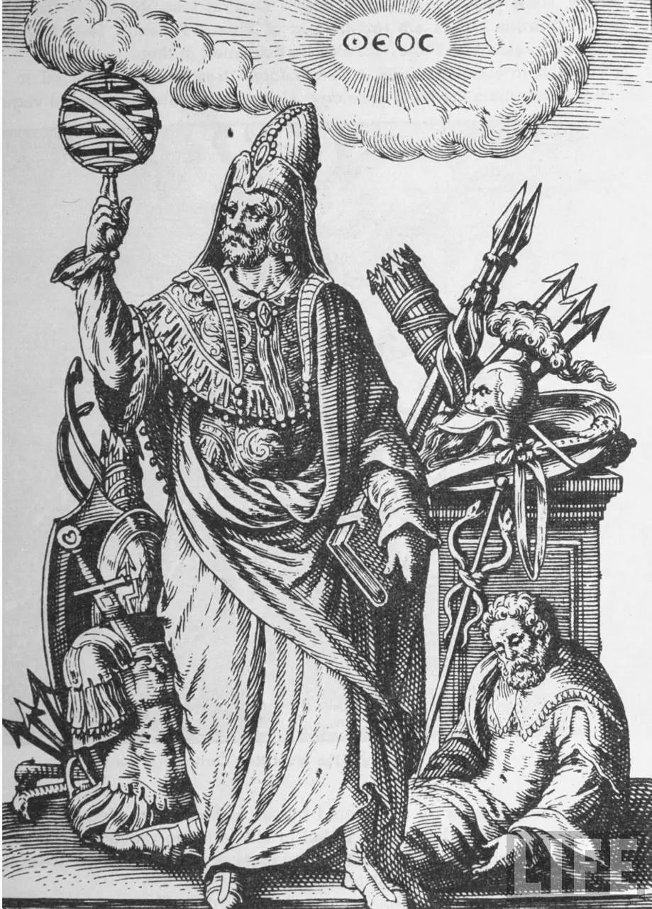
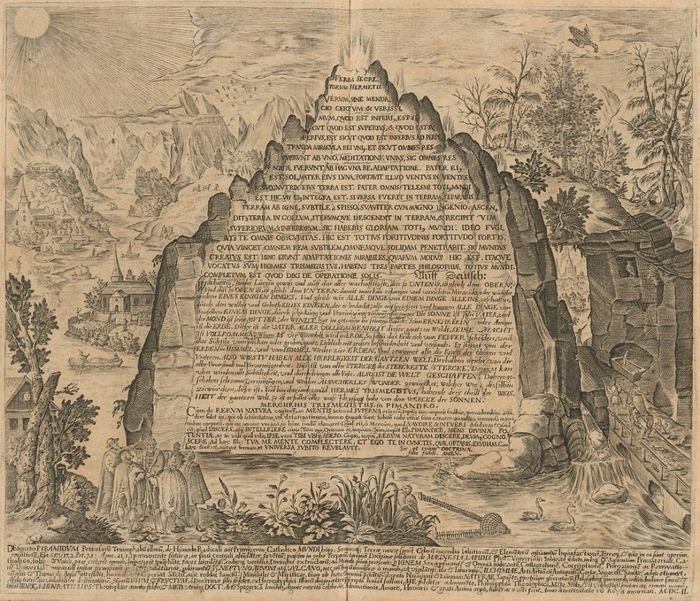

hermes trismegistus
 Hermès Trismégiste (en grec ancien Ἑρμῆς ὁ Τρισμέγιστος / Hermễs ho Trismégistos) est un personnage mythique de l'Antiquité gréco-égyptienne, auquel ont été attribués un ensemble de textes appelés Hermetica, dont les plus connus sont le Corpus Hermeticum, recueil de traités mystico-philosophiques, et la Table d'émeraude. Les Grecs donnent le nom de leur dieu Hermès à la divinité égyptienne Thot, dont le culte se tient en Moyenne-Égypte à Khemenou qui devient Hermopolis Magna. Cette assimilation devient officielle sous les Ptolémées, comme en témoigne le décret de l'assemblée des prêtres égyptiens gravé sur la célèbre Pierre de Rosette (-196). « Hermès Trismégiste est issu de la fusion de Thot et d'Hermès ».La Table d’émeraude (Tabula Smaragdina en latin) est un des textes les plus célèbres de la littérature alchimique et hermétique. C’est un texte très court, composé d'une douzaine de formules allégoriques et obscures, dont la plus célèbre : « Ce qui est en bas est comme ce qui est en haut, et ce qui est en haut est comme ce qui est en bas. » Selon la légende, elle présente l’enseignement d'Hermès Trismégiste, fondateur mythique de l'alchimie, et aurait été retrouvée dans son tombeau, gravée sur une tablette d’émeraude. La plus ancienne version connue se trouve en appendice d’un traité arabe datant au plus tard du début du ixe siècle. Elle a été largement commentée au Moyen Âge et surtout à la Renaissance.